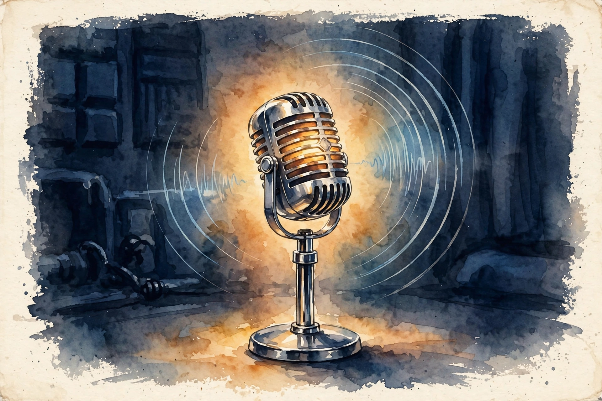

Charisma · Episode 2 · Companion
Tactical Empathy: How to Win Hard Conversations
Chris Voss was the FBI lead international kidnapping negotiator. His book Never Split the Difference moved his methods from hostage scenes to business and family life. The central claim: every hard conversation is a negotiation, and negotiation is not combat. It is information gathering driven by empathy. This companion follows the episode chapter by chapter.
Photo. Chris Voss. Source: masterclass.com, his official MasterClass course page.
Watch. The official Huberman Lab episode video. Chapter times below follow the show's published chapter list.
The Wisdom Index: every nugget in this companion
Source fact A claim from the episode transcript or the show's published chapter list. Interpretation My read on what it means. Times marked ~ are proportional estimates from word position, since the transcript carries no timestamps.
00:00 · Chris Voss
The Man From the FBI
Source fact Chris Voss served as an agent with the FBI and became its lead international kidnapping negotiator. His book Never Split the Difference moved his methods from hostage scenes to business and family life.
Source fact The episode's central claim: every hard conversation is a negotiation, and negotiation is not combat. It is information gathering driven by empathy.
04:59 · Negotiation Mindset, Playfulness
Playful, or Nothing
Source fact Voss opens with the mindset: approach negotiations with a playful attitude. Playfulness unlocks outcomes that pressure cannot.
Source fact Two sentences carry the philosophy. There is always a better deal, or there is no deal at all. And the sin is a slow goodbye to a dead deal. Walking away fast from a bad deal beats grinding toward one.
Nugget 1 · Walking Away
Walk away fast
What happened. Voss hunts for whether a deal exists at all. If it is a bad deal, he walks away fast. A slow goodbye to a dead deal is the sin.
Why it matters. A bad deal compounds. Time spent grinding toward one is time stolen from the better deal.
The principle. Decide fast whether the deal is real. If it is not, leave fast and keep your power for the real one.
11:41 · Calm Voice, Emotional Shift, Music
The Three Voices

Illustration. The late-night FM DJ voice: low, slow, calm. AI-generated watercolor.
Source fact Voss teaches three voices. One, the late-night FM DJ voice: low, slow, calm, with a downward inflection. Use it most of the time. It signals control and safety. Two, the positive, playful voice: relaxed and smiling. Use it for the bulk of normal conversation. The episode stresses playful over exciting. When his luggage was lost, the agent who helped him most used a magic wand tone, playful and unhurried, not pumped up. Three, the direct, assertive voice: firm and flat. Use it rarely. It triggers pushback.
Source fact Huberman adds the neuroscience in the episode: low-frequency, calm voices entrain the listener's nervous system toward calm. Your voice is a remote control for their state. Speak slowly and their heart rate follows.
Toy: pick the voice
Three moments from hard conversations. Choose the voice Voss prescribes.
Moment 1: you open a tense salary talk.
Moment 2: a counterpart shouts an ultimatum.
Nugget 2 · Voice
The DJ voice
What happened. The late-night FM DJ voice is low, slow, calm, with downward inflection. Voss uses it most of the time. Calm voices entrain the listener's nervous system toward calm.
Why it matters. Your voice is a remote control for their state. The assertive voice feels powerful and triggers pushback. The DJ voice feels safe and opens ears.
The principle. Default to the DJ voice. Season with playful. Reserve the assertive voice for rare hard boundaries.
18:59 · Win-Win?, Benevolent Negotiations, Hypothesis Testing
The Win-Win Trap
watch out for the person who says win-win.
Chris Voss · Episode 18:59
Source fact If someone says win-win in the first five minutes, treat it as a pickpocket flag. It correlates extremely highly with someone trying to pick your pocket. Real partners do not need the label that early. The label that early means someone manages you.
Source fact Hypothesis testing is the disciplined alternative. Guess their perspective out loud and let them correct you. It seems like something crossed your mind. Alignment, not mind reading.
Source fact Most people fear no. Voss chases it. No makes people feel safe and in control, and safe people talk. No-oriented questions beat yes-oriented ones. His example: would it be a bad idea if we tried this gets a real answer, while do you agree gets a polite lie.
Nugget 3 · Red Flags
Hear win-win, slow down
What happened. The phrase win-win in the first five minutes flags a pickpocket: someone who wants you to drop your guard.
Why it matters. Labels that early are management, not partnership. The flag tells you to verify everything before you trust anything.
The principle. When you hear win-win early, slow down. Replace trust with hypothesis testing: guess their view out loud and let them correct you.
28:38 · Generosity · 33:44 · Hostile Negotiations, Internal Collaboration
Generosity and Hostile Rooms
Source fact Start conversations with a gesture of generosity. Generosity builds rapport before any ask lands.
Source fact For hostile rooms, Voss prescribes the accusation audit: list the worst things the other side could think about you, out loud, before they say them. You probably think I will waste your time. You might feel this is just another sales pitch. Each audited accusation defuses one land mine.
Source fact He pairs it with the inoculation phrase this will sound harsh. Saying it first lets the listener brace, which makes the harsh thing land softer. The episode cites Robert Mnookin and the Kotler framing: tactical empathy transmits information, not warmth. You show you see their world instead of asking them to like you.
Nugget 4 · Defusing
The accusation audit
What happened. Before the other side speaks, Voss names their worst suspicions about him out loud. Each named suspicion loses its charge.
Why it matters. Unspoken suspicions steer the whole conversation. Spoken ones become discussable. The audit turns hostility into candor.
The principle. Before your next ask, list the two worst things they might think about you and say them first.
39:40 · Patterns and Specificity · 48:15 · Urgency, Cons, Asking Questions
Signal Versus Noise
Source fact Fair questions test threats. The specificity test: a vague threat is noise. A specific threat is signal. Ask for specifics and bluffs collapse. The episode adds the double dip warning: some counterparts take a concession and then ask again. Proof of advantage means you verify the threat or the promise before you pay for it.
Source fact Urgency is the scam flag. Legitimate deals survive verification. The Vegas breakfast story, told in the episode: a supposed urgent deal fell apart the moment Voss insisted on verifying it over breakfast. If it cannot wait for a check, it is not a deal.
Four red flags and the response
From the episode. Hover for the move each flag demands.
Source: Huberman Lab, Chris Voss, 18:59 through 48:15.
Nugget 5 · Verification
Verify before you pay
What happened. Vague threats are noise, specific threats are signal. False urgency dies under verification, as the Vegas breakfast proved.
Why it matters. Concessions paid to noise are gone forever. Verification is free. The check costs a breakfast. The scam costs the deal.
The principle. Demand specifics for every threat and every promise. If it cannot wait for a check, walk away.
54:46 · Negotiations, Fair Questions, Negotiations
Fair Questions and the Long Game
Source fact Calibrated questions start with how or what, never with why. How am I supposed to do that. What makes this a priority for you. Why sounds like an accusation. How and what force slow thinking. The episode cites Daniel Kahneman's fast and slow thinking: how and what questions engage the deliberate system.
Source fact Calibrated questions give the other side the illusion of control while you steer. How do I know you will follow through is the fair question Voss recommends when someone promises the moon. It forces them to solve your problem.
Source fact Wear out the cutthroats. The episode cites Picco's rule: exhaust the other side's will to fight rather than matching their aggression. Patience is a weapon.
1:02:18 · Vision Drives Decision, Human Nature and Investigation
Vision Drives the Decision
Illustration. Sell the far bank, not the crossing. AI-generated watercolor.
Source fact People decide with a picture of the future in their head. Voss's FARC story makes the point: hostages crossed a river to freedom because someone painted the picture of what waited on the other side, not because of arguments about the crossing. Sell the vision first.
Source fact Two corollaries. Get the verbal promise last. A promise extracted early is cheap and breeds resentment. Let the vision do the work, then collect the yes. And remember that people lie in twenty ways and tell the truth in one way. When the story keeps changing shape, you hear fabrication. When it stays simple and consistent, you hear the truth.
Nugget 6 · Persuasion
Sell the vision
What happened. Hostages crossed a river because someone painted the far bank, not because someone argued about swimming. People decide with a future picture in mind.
Why it matters. Arguments fight the present. Vision pulls the future. The promise comes last, after the picture does the work.
The principle. Paint the far bank first. Collect the yes only after they can see it.
1:07:47 · Lying and Body, Gut Sense · 1:15:42 · Face-to-Face Negotiation
Gut Sense
Source fact Humans often have an unexplained somatic response when something feels off about a person or situation. The gut picks up subtle cues before the conscious mind does. Trust the feeling and explore it.
Source fact The face-to-face chapter covers the 7-38-55 split (7% words, 38% delivery, 55% body language), which Voss calls very unscientific on air. In person, the emotional channel carries the weight that words alone cannot.
1:20:39 · Online and Text Communication · Straight Shooters
Texts and Straight Shooters
Source fact Keep it to one move per text message. Long texts with three asks get one answer to the easiest ask. One text, one move. The Nick Nanton two-line text, cited in the episode, shows the discipline: two lines, one ask, easy to answer yes to.
Source fact The straight shooter versus blunt distinction matters. A straight shooter is direct and respectful. Blunt is direct and careless. One keeps the relationship. The other spends it.
1:26:47 · Break-ups, Firing, Resilience
The Hard No
Source fact Some conversations are terminations. Voss is blunt: there is no gentle way to cut somebody's head off. Do it on Monday, not Friday, so the person can act instead of stewing through a weekend. Warn first, then keep the meeting under three seconds of small talk before the news. Dragging it out is cruelty dressed as kindness.
Source fact The same rules cover romantic and professional break-ups. Warn first, then deliver the news promptly and let resilience do its work. Human beings recover fast when they can prepare for the impact.
Nugget 7 · Endings
The hard no
What happened. Firings happen on Monday with a warning and under three seconds of preamble. Friday firings and long preambles are cruelty dressed as kindness.
Why it matters. Delay serves the deliverer, not the receiver. Clean endings let resilience start immediately.
The principle. Warn, then deliver fast. Monday, not Friday. Three seconds of small talk, not thirty minutes.
1:37:35 · Readiness and Small Space Practice, Labeling · 1:45:17 · Emotions and Listening
Label First
Source fact Labeling means naming the other person's emotion or situation out loud, tentatively. It seems like this feels frustrating. It looks like you feel unheard here. The label does not need to be perfect. A wrong label still works because the person corrects you, and the correction is information.
Source fact Voss describes emotion as rock, paper, scissors. Sadness moves into anger. Anger moves into calm. Calm opens into positive feelings. You cannot jump from furious to happy. You walk the sequence. Labeling is the tool that walks it.
Source fact The episode's rule: react before you answer. When someone hits you with something hot, label first, answer second. The label buys your thinking brain time and lowers their alarm.
The rock-paper-scissors walk
You cannot jump states. Label each one and walk the sequence.
Source: Huberman Lab, Chris Voss, 1:37:35. The rock-paper-scissors sequence, as taught on air.
Source fact Practice on small stakes. Voss talks to Lyft drivers to stay ready. His suggested opener: "What do you love about driving for Lyft?" Low stakes, real humans, live reps. The CEO clean-water story shows the same skill at scale: genuine curiosity about a stranger's mission, delivering clean water to the world, opened a door no pitch could.
Source fact Venting needs a taxonomy. Frustration points at the future denied. Anger points at the past. Label which one you hear and the speaker feels understood instead of managed.
Source fact Ego depletion is real and it is bad for deals. Decision fatigue makes you concede or snap. Voss recharges during implementation: after the hard part, let the routine part restore you.
Toy: label the heat
A counterpart snaps that this is the third delay and nobody tells them anything. Choose the label Voss prescribes.
Nugget 8 · Listening
Label first
What happened. React before you answer. A tentative label walks the other person from sad through anger to calm. Even a wrong label works: the correction is information.
Why it matters. Answering heat with heat escalates. Labeling buys your thinking brain time and lowers their alarm.
The principle. No label, no argument. Say it seems like before you say anything else.
2:02:40 · Hostages, Humanization and Names
Become a Person
Drop your name on them in a way so that you go from being a faceless person to somebody with a name
Chris Voss · Episode 2:02:40
Source fact In kidnappings, Voss's rule for the captive: comply, and humanize yourself. Say you will do whatever they say, then give your first name the way he demonstrates on air with his own name. First names break the dehumanization script. The episode cites the Good Guys case of about 1990 and the Prince's Gate siege: once a captor sees the negotiator as a person, the math of harm changes.
2:08:50 · Tactical Empathy, Compassion
Empathy Is Transmission
Source fact Voss defines empathy strictly as the transmission of information: actively demonstrating, through words, that you see the other person's perspective. Empathy is not compassion. Compassion reacts to the map. Empathy is the map made visible.
Source fact By this definition, empathy needs no warmth toward the other person to work. It is an unlimited skill: you can map anyone's world without agreeing with it.
Interpretation This is the episode's thesis in one line. Tactical empathy aims at information, not affection. The feeling of being heard is the mechanism. The map is the goal.
2:15:27 · Tool: Mirroring Technique · 2:22:20 · Tool: Proactive Listening
The Mirror
Illustration. Repeat the last words, then let the silence work. AI-generated watercolor.
Source fact Mirroring means repeating the last one to three critical words of what someone just said, with an upward, curious inflection. His example: the counterpart says we cannot do that, and the mirror replies cannot do that, then silence. Most people fill silence with information.
Source fact Two rules keep mirroring clean. Mirror one to three words, not whole sentences. Long mirrors sound like parroting and trigger defenses. And keep the inflection curious, never flat or sarcastic, or the mirror becomes an insult.
Nugget 9 · Information
Mirror one to three words
What happened. Repeat their last one to three words with curious upward inflection, then go silent. They fill the silence with information.
Why it matters. Questions can feel like interrogation. A mirror feels like attention. The silence does the asking for you.
The principle. One to three words, curious tone, then silence. Never mirror with a flat or sarcastic voice.
2:29:48 · Family Members and Negotiations · 2:47:45 · Sounds Like... Perspective
Tape It
Source fact In kidnappings, Voss's rule was: tape, do not live-call, when families speak to captors. A live call lets emotion hijack the message. A recording lets you control every word. The business version: do not send the angry email live. Draft it, tape it, review it. Write it hot, send it cold.
Source fact The episode closes on the sounds like perspective: the label as a way of seeing. Every tool in the episode is one move: show them you see their world, then steer.
Nugget 10 · Discipline
Tape it
What happened. Kidnap families recorded messages instead of calling live. Emotion could not hijack a recording.
Why it matters. Live emotion writes checks the calm mind will not cash. The draft is the tape. Review is the control room.
The principle. Never send the hot message live. Draft it, wait, review it, then send it cold.
The episode in seven lines
- There is always a better deal, or there is no deal at all. Walk away fast from the dead ones.
- Default to the late-night FM DJ voice. Your voice is a remote control for their state.
- Hear win-win in the first five minutes, slow down and verify everything.
- Run the accusation audit before they speak. Name their worst suspicions first.
- Ask how and what, never why. Let them solve your problem.
- Label before you answer. No label, no argument.
- Mirror one to three words, then let the silence ask.
Distilled from Huberman Lab, Chris Voss: How to Succeed at Hard Conversations, Oct 2023. Full episode: youtube.com/watch?v=q8CHXefn7B4. Times follow the show's published chapter list.